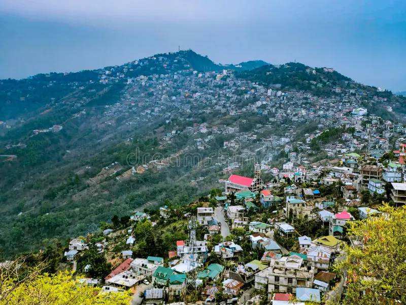
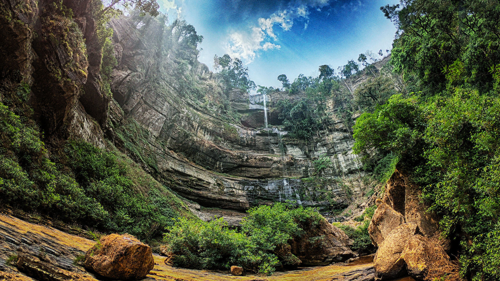
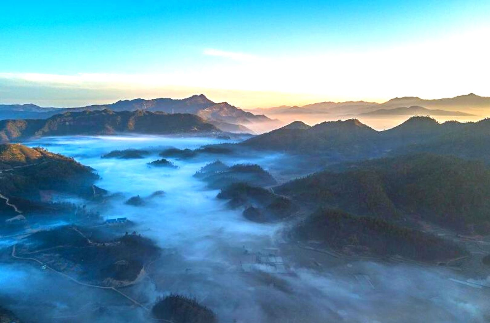

Day 1: Arrival | Route: Lengpui ➔ Aizawl
- Activity: Arrive at Lengpui Airport. Drive to Aizawl. Walk around the quiet streets in the evening.
- Stay: Aizawl (Hotel Regency or Homestay).
Mizoram, meaning "Land of the Hill People," is a serene state perched on the southern tip of Northeast India. It is defined by the Mizo Hills (formerly Lushai Hills) that run north to south in steep parallel ridges. The state is known for its high literacy rate and a society deeply rooted in the moral code of Tlawmngaihna, which preaches selfless service and placing the community above the self.
The culture is a vibrant mix of indigenous tribal traditions and Christianity. From the rhythmic Cheraw (Bamboo Dance) to the melodious choirs that echo from churches every Sunday, Mizoram offers peace, discipline, and breathtaking views of rolling blue hills covered in bamboo forests.
Some Interesting Facts about Mizoram:
Aizawl: The Vertical City
|
 |

|
Reiek Tlang: The Trekker's Delight
|
Vantawng Falls & Thenzawl
|
 |
|
 |
Phawngpui: The Blue Mountain
|
1. By Air
|
2. By Rail
|
|
3. By Road
Mizoram's roads are scenic but winding.
|
Choose Your Vibe
The Aizawl & Hills CircuitBest for: Culture lovers, relaxation, and short trips.Day 1: Arrival | Route: Lengpui ➔ Aizawl
Day 2: City Life | Route: Aizawl Local
Day 3: The Peak | Route: Aizawl ➔ Reiek Tlang
Day 4: Southern Charm | Route: Reiek ➔ Hmuifang
Day 5: Departure
|
The Blue Mountain TrailBest for: Nature lovers, photographers, and explorers.Day 1: Arrival | Route: Aizawl
Day 2: The Waterfall | Route: Aizawl ➔ Thenzawl
Day 3: Deep South | Route: Thenzawl ➔ Lunglei
Day 4: The Highest Point | Route: Lunglei ➔ Phawngpui
Day 5: Trekking Gods' Abode | Route: Phawngpui Peak
Day 6: Return Journey | Route: Lunglei ➔ Aizawl
Day 7: Departure
|
| Time | Best For |
|---|---|
| October to March | Winter: Clear skies, pleasant days, and cold nights. Best for mountain views. |
| March (First Friday) | Chapchar Kut: The biggest spring festival celebrating the end of Jhum clearing. Expect bamboo dances and feasts. |
| September | Anthurium Festival: Celebrated at Reiek to promote tourism and flower cultivation. |
Important things to know before you pack your bags.
Like Arunachal and Nagaland, all Indian tourists need an ILP.
This is critical. Everything shuts down on Sundays. No shops, no taxis, no markets. People are in Church. Plan your arrival or departure on any day except Sunday to avoid being stranded without transport or food.
Mizoram is a dry state (with some exceptions for locally produced grape wine). Do not carry alcohol openly and respect the local laws. Public intoxication is frowned upon.
The Mizo lifestyle starts early. Dinner is usually served by 6:30 PM or 7:00 PM. Restaurants close very early compared to mainland India.
Mizo is the primary language, but English is widely spoken and understood, especially by the youth. Hindi is understood in Aizawl but less so in remote villages.
Mizoram is entirely hilly. The roads wind constantly. If you get motion sickness, carry medication (Avomine) for road trips.